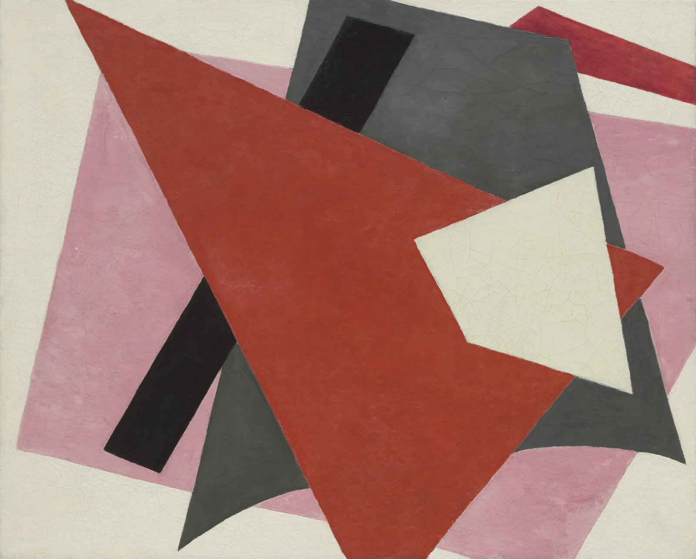

Daily Art / 2026.11.01
Balance under pressure
Red pushes forward. Grey and white hold it in the frame.

Liubov Popova · 1917
The Museum of Modern Art, New York
14.1958
Liubov Popova (1889–1924). Painterly Architectonic, 1917. Oil on canvas, 80 × 98 cm. The Museum of Modern Art, New York; object 14.1958.[1][3]
Composition, colour, light and emotional readings below are independent visual analysis. Biographical and material facts follow the museum sources.
Composition | A diagonal meets resistance
Follow the upper edge of the red plane from the upper left toward the right. Before the eye can escape, an ivory trapezoid interrupts that route. A grey form presses forward from behind; black bars provide darker counterweights. Almost every edge tilts, leaving little horizontal rest. Yet overlap makes the movement resist itself. Near the bottom, a curved grey edge gives rigid geometry a surprisingly flexible profile. Rather than depicting a building, the painting builds a space from edges, weight and interruption.
Colour | Giving red weight
In this reproduction, vermilion and muted pink form a warm neighbouring hue relationship. Pink lowers the surrounding intensity, allowing red to lead without standing alone. Charcoal, grey and ivory establish a separate hierarchy of values; beside the warm planes, neutral grey feels relatively cool. The structure depends on value, saturation and area contrasts rather than a strict complementary pair. Red gains force through its large area, while a smaller ivory shape gains stopping power through brightness. Screen colours cannot identify historical pigments.
Light | Depth without a sun
There is no consistent cast-shadow direction. Instead, overlap tells the eye what sits in front: ivory covers red, and red covers grey. The curling lower edge of the grey plane suggests a lift. Black against the pale ground produces an abrupt boundary; middle grey offers a slower transition. Light seems redistributed into separate sheets of value. Reduce the reproduction to greyscale and the planes still press against one another.
Technique | Paper-like, painted
The medium is oil on canvas, not paper collage.[1] The overlapping planes suggest cut paper, yet the reproduction reveals uneven strokes within colour fields, slight irregularities along edges and surface cracking. Those cracks belong to the work’s visible condition and should not be treated as intentional pattern. Geometry keeps a handmade surface: outlines clarify, while paint introduces variation. This image alone cannot establish the underdrawing, layer sequence or particular tools used.
Artist | From objects to forces
Popova was a Russian avant-garde artist. Museum research traces her engagement with Cubism and Futurism, her move toward non-objective work and her later theatre and production design.[4] This painting belongs to her exploration of colour planes and spatial relationships. Try looking without naming an object: which shape pushes, and which receives the pressure? That question is a viewing exercise proposed here, not a quotation from the artist.
Why it moves | Order can carry strain
These forms do not feel weightless. Red wants to cross the frame, grey seems to bend, and white catches the movement. We often imagine balance as symmetry. Here it feels closer to several forces finding a temporary arrangement. To me, the painting resembles a crowded morning: everything still moving, but something holding it together. That is a present-day emotional reading, not a claim about Popova’s psychology or historical intentions. At the start of November, its tension feels quietly useful.
Try it | Overlap before ornament
For a cover, start with one large diagonal red plane, support it with grey, then interrupt the main diagonal with a smaller ivory shape. Keep one dominant direction and two overlaps. A suggested layout palette: 45% ivory #F4F0E6, 25% muted pink #C596A2, 20% charcoal-grey #505350 and 10% vermilion #AD4637. These are design starting points with redistributed areas, not measured artwork colours, pigment formulas or original area ratios. Put text in the quiet ivory space.
Social caption
Red pushes. Grey bends. White catches the movement. Popova’s Painterly Architectonic makes balance feel active. Save one idea for your next cover: one dominant diagonal, two overlaps. #DailyArt #AbstractArt #ColourStudy